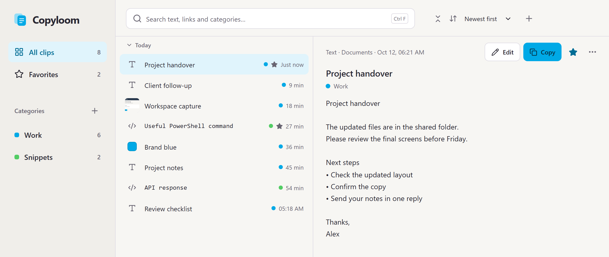
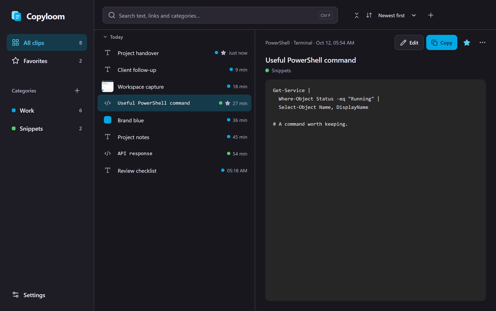
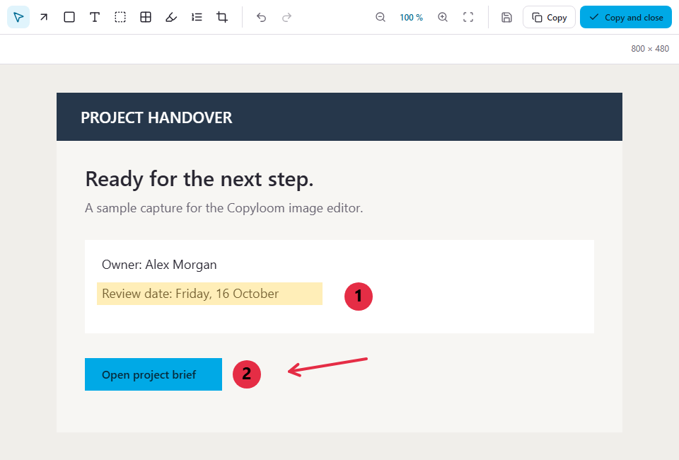

Find the thing you meant.
Search your history by text or source app. A small typo doesn't have to end the search.
A clipboard history for Windows. Find the text, links and images you need, without copying them all over again.
Download for Windows
Give the things you copy a place you can find again. Keep useful text, links and code together in Copyloom.

Search your history by text or source app. A small typo doesn't have to end the search.
Favorite the replies you use often. Group project notes, commands and links into categories.
Preview the whole clip, make a quick edit, or copy it straight back into your work.

Add an arrow. Mark a detail. Number the steps. Copyloom's editor turns an image into something easier to explain.
Crop, highlight, add text, or cover sensitive details. Keep the original and save the edited version when you're ready.
See the editorYour clips live in an encrypted database on your PC. You choose which apps to exclude, how long to keep your history, and where it's stored.
Local backups and password-protected exports give you a way to bring your history with you.
No account, no subscription and no trial, at home or at work. If it saves you time, you can support it on Ko-fi, once or monthly.
For Windows 11, 64-bit. The installer is not code-signed yet, so Windows may ask you to choose More info, then Run anyway.
Built for Windows 11, 64-bit.
Copied text, links, code and images. Your history is searchable, and you can favorite clips or put them in categories for later.
Copyloom is built for Windows 11 on a 64-bit PC. The app interface is available in English and Swedish.
Yes. Add an app to your exclusions in Settings. You can also pause collection or choose how long to keep your history. Favorites stay until you remove them.
In an encrypted database on your computer. You can choose a different data folder and create a password-protected export to restore on another Windows PC.
No. Your clips stay on your PC, and Copyloom doesn't send them or any usage data to us. Text recognition in images runs on your computer too.
Yes, at home and at work. If you'd like to support it, you can donate once or monthly on Ko-fi. Donations are voluntary and don't unlock anything.
Yes. The code is on GitHub under the GNU General Public License 3.0. You can read it, build it yourself and share changes under the same licence.
Download the installer from GitHub. New versions are published there too; Copyloom does not update itself yet.